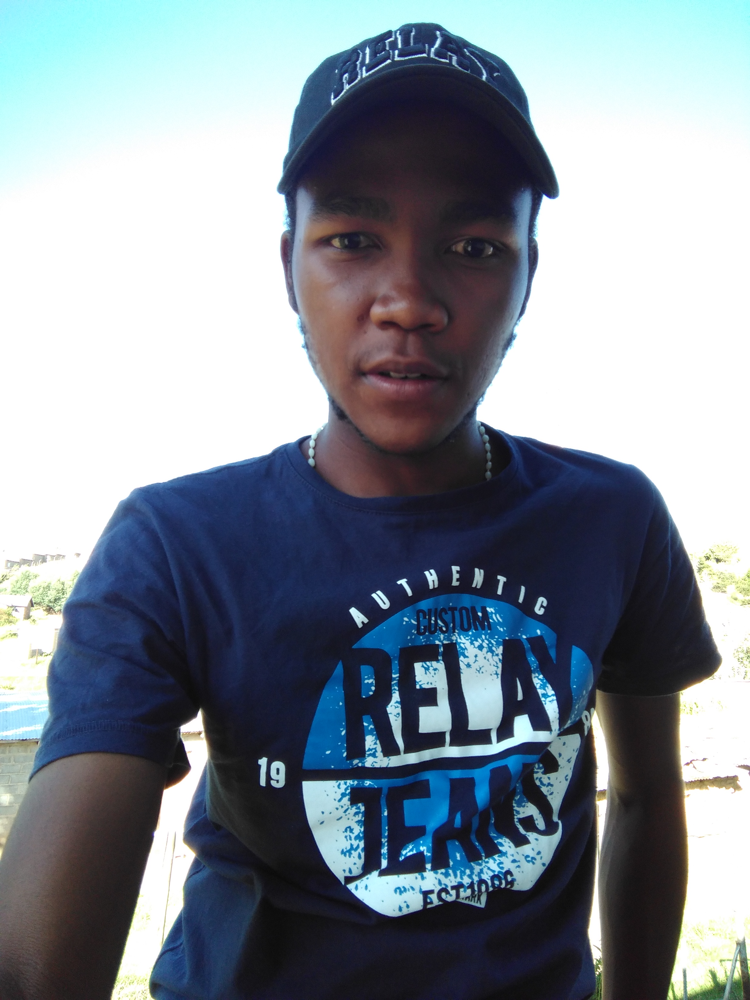
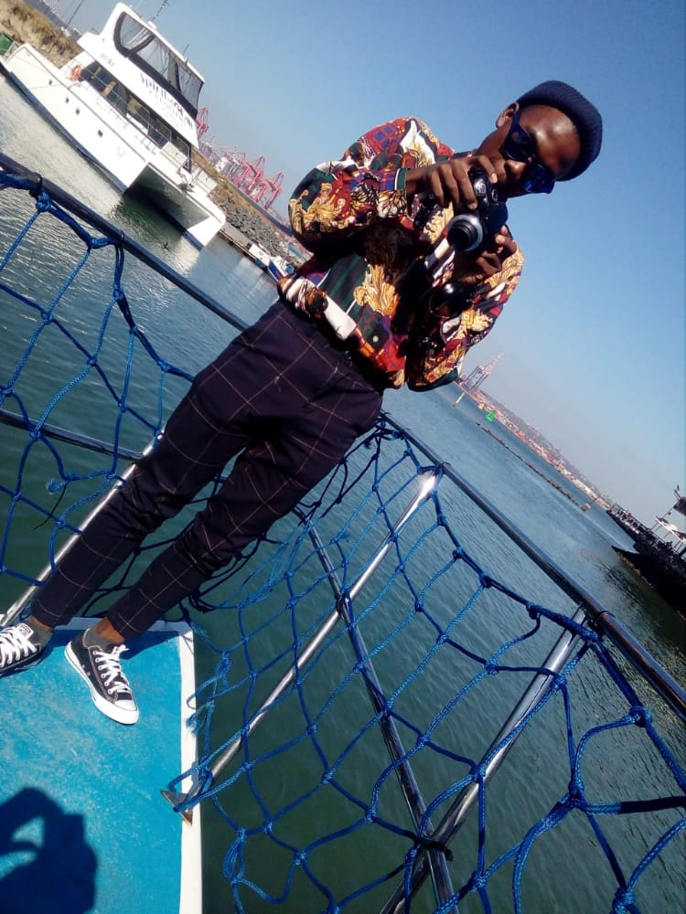

About Me
I am Nqhae Nicolas Qhobela, popularly known as "Nicqoe". I was born and raised in Maputsoe,Leribe. I spent the whole of school life there. I went to primary at Mafube English Medium, where i did my standard 1 to 7 in the years 2008 to 2014 and managed to attain a top 4 rank for my PSLE certificate.I furthered my studies at St.Boniface High School to do my JC and LGCSE, and managed to pass them with really convicing grades.In 2020,I moved on to Lesotho High School to do my Advanced Subsidiary so I can upgrade my grade standards so I can study abroad, in the process of studying COVID-19 happened and my dream of studying abroad seemed impossible. Once I was done with AS LEVEL, I applied to Limkokwing University of Creative Technology, where I am currently studying BSc in Software Engineering with Multimedia.
During the course of life, I got employed here and there. I was first employed at the catering company where I was delivery boy at the government complex.I delivered food and drinks, that was early 2020. Late 2020 I was then employed at a Cannabis company called Hemp Africa (pty), where I worked as trimmer and helping out wherever I could. Early 2021 I was part of a clothing brand, ROOMMSSTUDIO, where I was part of the marketing team. Mid 2021, made my own business, an embroidery printing business that is still operating even now. My team and I print for schools and people mostly around Hlotse and Maputsoe,plus the rest of Leribe.I also get customers from Maseru and other parts of the country.Further more on me late 2021, I enrolled with the University.